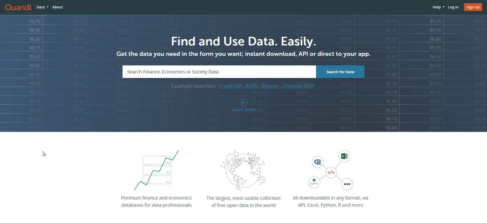

Data Sources : Data Scraped From Edgar and Quandl Data
EDGAR DATA : "The Scraped Data"
Edgar is the SEC's storage system for corporate financial filings. This was consequently the first place we looked for data
The Edgar API was really difficult to navigate, and there was no obvious way to download 10k documents in bulk via FTP, so we ended up writing a console application in C# that used a web driver see "Edgar Extractor" that invoked FireFox to issue a request to the Edgar server to load company document pages by CIK number. Once we reached the interface, we looped through each page of documents, issuing further requests, until we found "10-K" button, which we did using XPath, and which we invoked the web driver to click on. At first, we wanted to rely exclusively on parsing of the 10k for our data, but at it turned out, parsing this data was exceedingly difficult, and we only managed to get 25% of the dataset if we were to consider 20+ columns. The parser we built was extremely time-consuming, but ultimately useless.
We went back to our web driver and clicked through the interactive listing of documents in order to find the excel file with all the financial data we needed in a tabular format, which we copied the address of, and downloaded programatically. After downloading every set of financials for last 3-5 years, we built another console application in C# to parse the Excel workbooks, and extracting the relevant financial data.
Quandl
We found that scraping the data directly in SEC's EDGAR database is challenging, time consuming with little returns because the data entities in the Form 10-K are not really standardized. We started looking for alternate data sources and found that there is really no one who provide a hollistic company fundamentals data that is in EDGAR. Our best option was to use a datasource offered by Quandl.com.  Quandl is a website that hosts open datasets for free and commercial use hosted by independant data providers. They are several financial datasets on offer and we looked at the following datasets, https://www.quandl.com/SEC https://www.quandl.com/RAYMOND https://www.quandl.com/DMDRN before finalizing on this one, https://www.quandl.com/SF1 This dataset offers 10 years of SEC filing history, for 69 essential fundamental indicators and financial ratios (https://www.quandl.com/SF1/documentation/indicators), for most of the companies in the S&P500 list. Sourcing the data was still challenging. Quandl offers several means and they also a Python module that can access their APIs. The instructions on using the python module can be found here. (https://www.quandl.com/help/python) We wrote the Python code to call the API for the S&P 500 companies for every indicator available. Each API resulted in a Python dataframe. The data from all these dataframe are then aligned and then merged into a final dataframe and stored locally in a csv file for further use in the project.